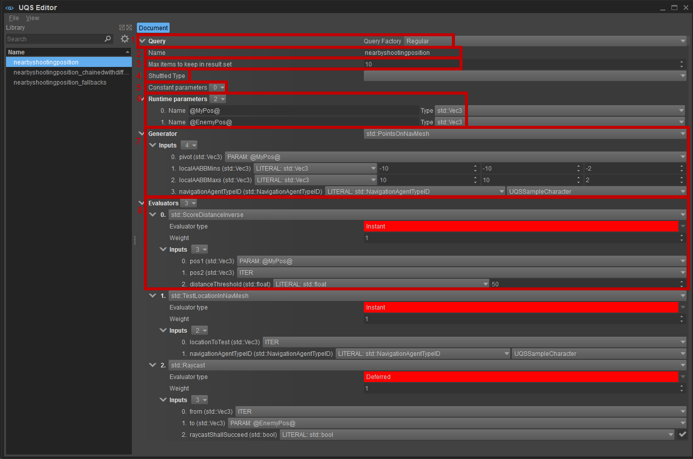

Обзор
Универсальный редактор запросов — это плагин Sandbox, который позволяет пользователю создавать новые схемы запросов. Доступ к этим схемам запросов затем можно получить с помощью кода по их имени, и они могут быть преобразованы в «живой» запрос во время выполнения.
Подробности
Вы можете получить доступ к редактору запросов UQS, перейдя по адресу Инструменты -> Редактор UQS.
Откроется главное окно редактора запросов:

Фабрика запросов: позволяет выбирать между 3 различными типами запросов:
Обычный: это запрос, который фактически генерирует и оценивает элементы.
Резервные варианты: составной запрос, который пытается выполнить альтернативные запросы, если «основной» запрос не нашел никаких элементов.
Прикованный: составной запрос, позволяющий передавать полученные элементы следующему запросу в цепочке в виде входных параметров.
Имя: это имя схемы запроса, которая будет использоваться для создания экземпляра соответствующего запроса во время выполнения.
Вам следует согласовать с вашим программистом конкретное имя, поскольку оно также должно будет использоваться в коде.- Максимальное количество элементов, которые можно сохранить в наборе результатов: количество элементов, которые нас интересуют. Обычно это что-то из нижнего диапазона чисел, например. г.:
- 1, если вы ищете хорошую боевую позицию.
- 3, если ваш необычный персонаж SpellCaster хочет выбрать 3 цели, которые он собирается атаковать.
- 0 — специальное значение: оно будет возвращать запрос все найденные элементы (это может быть очень требовательно к производительности).
- Тип челнока: это актуально только для Связанные запросы. Если один из дочерних запросов предполагает использовать набор результатов из предыдущего одноуровневого запроса, то этот список указывает тип элемента, с которым может работать запрос. Точнее, этот тип элемента будет использоваться для обеспечения правильного типа между тем, что возвращает предыдущий запрос, и тем, что оценщик использует в качестве входных параметров для доступа к этому предыдущему результату.
- Постоянные параметры: это список именованных параметров, значения которых уже можно указать в редакторе запросов. Эти параметры могут использоваться генератором и оценщиками как часть их входы.
- Параметры времени выполнения: это список именованных параметров, значения которых можно установить только во время выполнения. Например, если позиция агента, выполняющего этот запрос, важен для генератора, то эта позиция должна быть таким параметром времени выполнения. Эти параметры могут использоваться генератором и оценщиками как часть их входы.
- Генератор: это позволяет указать генератор, который будет создавать набор элементов, для которых затем будет выполняться запрос. Входные параметры генератора могут поступать из разных источников:
- PARAM: один из глобальных параметров, указанных выше.
- LITERAL: немедленное постоянное значение.
- функция: это может быть функция, возвращающая значение того же типа, что и параметр. Обратите внимание, что функции могут быть вложенными и могут сами требовать входные параметры.
- Оценщики: это позволяет вам указать произвольное количество оценщиков, которые будут работать со всеми элементами. Они будут использоваться для подсчета очков и сброса предметов. Подобно генератору, оценщики могут иметь входные параметры. Кроме того, существуют входные параметры, которые предоставляют доступ к посещенному в данный момент элементу:
- ITER: элемент, над которым в данный момент работает запрос.
- PARAM: один из глобальных параметров, указанных выше.
- LITERAL: немедленное постоянное значение.
- функция: это может быть функция, возвращающая значение того же типа, что и параметр. Обратите внимание, что функции могут быть вложенными и могут сами требовать входные параметры.